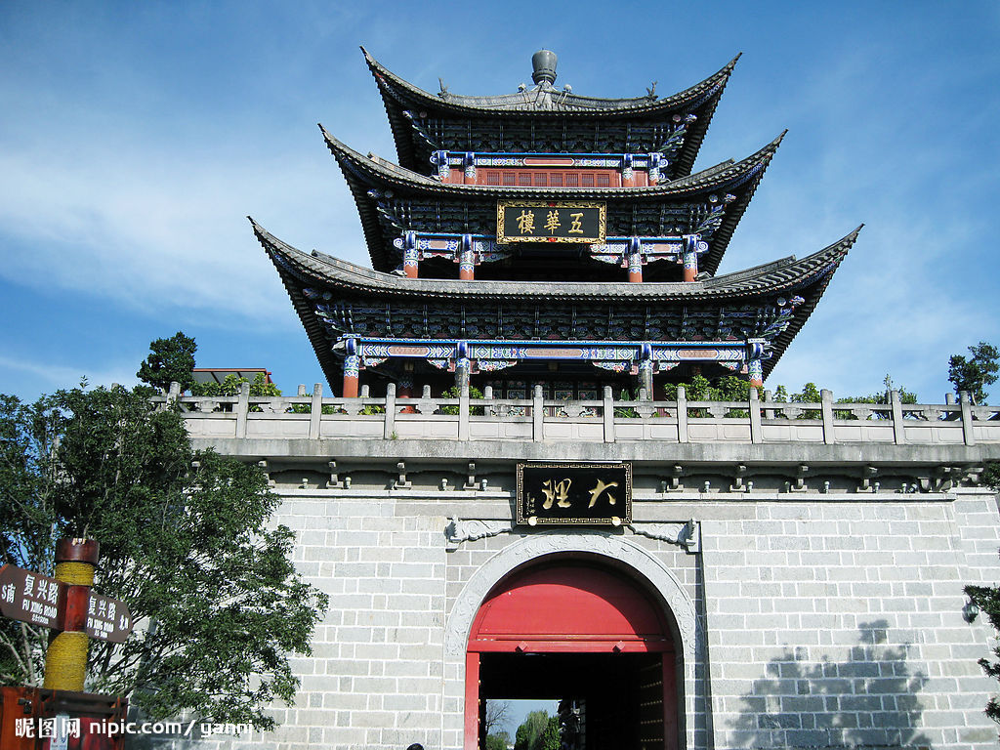

简介
大理古城位于云南省西部，又名叶榆城、紫城。古城其历史可追溯至唐天宝年间 ，南诏王阁逻凤筑的羊苴咩城，为其新都。古城始建于明洪武十五年（1382年），占地面积3平方公里。
大理古城在唐、宋500多年的历史间是云南的政治、经济、文化的中心，在古城内分布了14处市级以上的重点文物保护单位， 承载着大理历史文化、宗教文化、民族文化，是大理旅游核心区，设有大理古城景区，为国家4A级景区。 2019年10月，入选首届“小镇美学榜样”名单。

建筑特色
大理古城东西宽约1000余米，南北长约2000余米，南北纵向有三条大街，东西向有五六条小巷。 城内房屋皆土木结构瓦顶民居，街道大多由青石板铺设而成。大多数街道有引自苍山的清泉水流淌
古城方圆十二里，建有四座城门楼以及四座角楼。城墙四面设有四道城门，即东门洱海门（又称通海门），南门双鹤门（又称承恩门），西门苍山门，北门三塔门（又称安远门）。 城外有护城河。清代多次重修，城内保持着典型的棋盘式结构，南北城门对称，城内街道纵横交错，有“九街十八巷”之称。
荣誉
大理古城在唐、宋500多年的历史间是云南的政治、经济、文化的中心，在古城内分布了14处市级以上的重点文物保护单位，承载着大理历史文化、宗教文化、民族文化，是大理旅游核心区，设有大理古城景区，为国家4A级景区。 2019年10月，入选首届“小镇美学榜样”名单。